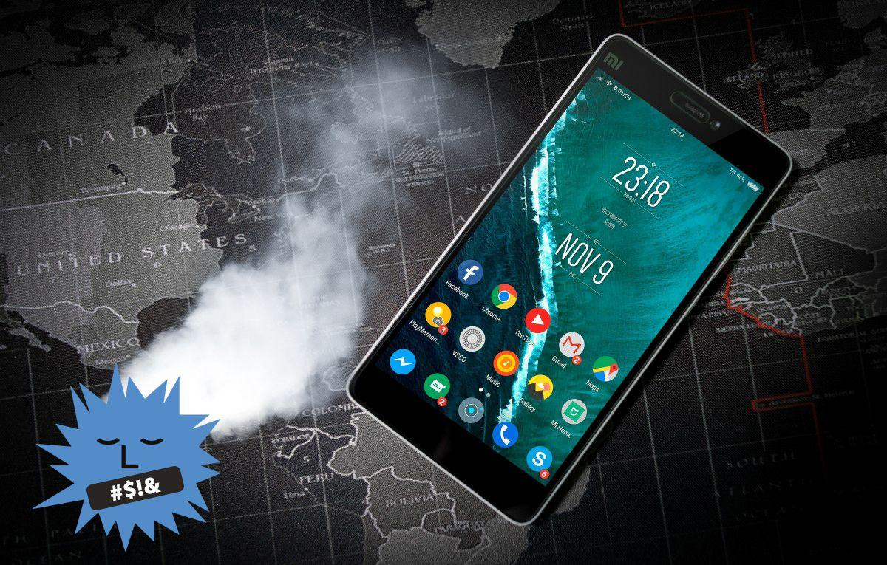
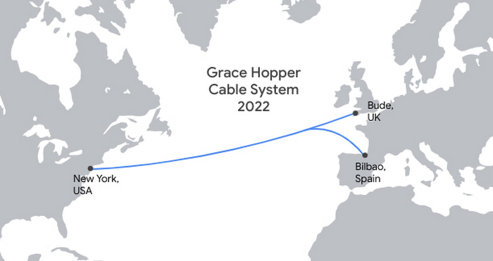
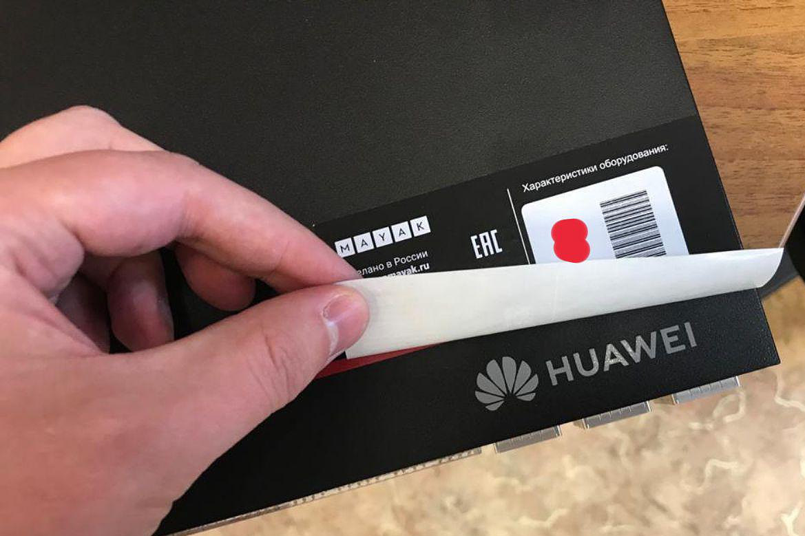

Не надо портить инженерам десктопы своими мобильными решениями, одумайтесь

Когда-то давно моя девушка начала использовать инстаграм. Она попросила
меня зарегаться и подписаться на неё. Я попробовал — у меня не получилось,
потому что в инстаграме нельзя было регистрироваться с десктопа. Я тогда подумал —
до чего же странные люди. Ну какой дурак будет делать софтверный продукт, которым нельзя
пользоваться с компа? У них ничего не получится, и этот инстаграм станет маргинальным
сервисом для кучки странных женщин, которые почему-то не любят десктопы.
Прошло всего несколько лет, рынок все расставил по местам — и самым большим дураком
оказался я. А гении из инстаграма предсказали, как и куда все будет развиваться. Сегодня
большая часть продуктов для пользователей делается в первую очередь под мобильные платформы.
В лучшем случае они фигачат универсальный веб, который все равно оптимизирован под мобильники. Потому что пользователи любят айфоны, а не компы. Бизнес сел, посчитал, и принял решение — давайте зарабатывать больше денег, давайте у нас везде будет мобайл ферст.
Я сам на днях затирал бизнесу, что мы будем делать мобайл-фёрст — потому что я старший разраб, и умею
принимать верные для бизнеса решения. Если человек сегодня захочет сделать массовый продукт, делая ставку
на десктоп версию — его почти гарантированно ждет провал.
Google проложит подводный кабель между США, Великобританией и Испанией

28 июля 2020 года Google анонсировала прокладку подводного волоконно-оптического кабеля,
который соединит США с Великобританией и Испанией. Этот проект будет называться в
честь Грейс Хоппер (Grace Hopper).
Google рассказала, что подписала соглашение с американской компанией SubCom
(ранее Google сотрудничала по таким проектам с Alcatel Submarine Networks), которая
специализируется на прокладке подводных кабелей. Согласно контракту, все работы по
прокладке кабеля между Нью-Йорком, Буде (Великобритания) и Бильбао (Испания) должны
быть завершены в 2022 году. Цель проекта — улучшить устойчивость сети, увеличить
пропускную способность и скорость работы всех сервисов Google, включая Meet, Gmail и
Google Cloud и других корпоративных продуктов Google.
По проекту длина нового подводного кабеля Google до Великобритании составит 6,25 тыс. км,
до Испании — 6,3 тыс. км. Кабель будет прокладываться по дну Атлантического океана. Внутри
кабеля будут размещены 32 оптических волокна (16 оптоволоконных пар). Вдобавок в этом
проекте будет использоваться новая оптоволоконная коммутация, которая повысит надежность
компонентов, позволяя IT-инфраструктуре и элементам связи лучше справляться с перебоями
в работе.
Где прячется Российская электроника
Каждый раз, когда я пишу о российской электронике, в комментариях появляется множество
людей, совершенно уверенных, что российской электроники не существует, и всё, что могут
делать отечественные компании — это приклеивать наклейки «Сделано в России» на китайские
устройства.

На самом деле несмотря на то, что в России действительно почти не производится
элементная база, производством электроники занимается огромное количество компаний
и даже частных лиц. Любое устройство, спроектированное в нашей стране можно назвать
российским, даже если оно производится в Китае из китайских комплектующих. Хороший
пример — Яндекс.Станция. Без всякого сомнения это российский продукт.
В России производятся охранные и пожарные сигнализации, системы защиты от протечек,
системы автоматизации и телеметрии, компоненты умного дома, светодиодные светильники
и многое другое.